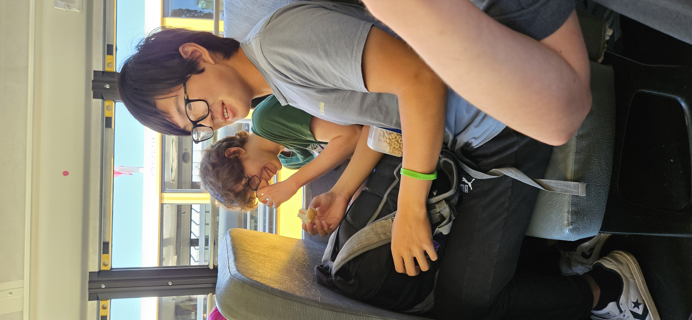

A Moment to Remember: Eddie's First Bite of Deviled Ham
Welcome to a milestone in culinary history! On this special day, we celebrate the moment Eddie took his first bite of deviled ham—a simple yet momentous occasion that has forever changed the way we think about canned meats.

The Experience
With a mix of curiosity and trepidation, Eddie took his first bite. The combination of spices, tangy flavors, and the rich texture of the deviled ham made for a moment that would go down in history. What started as a simple taste test turned into a memorable experience that neither Eddie nor Lucas will forget.
The Verdict
Eddie’s reaction? A mixture of surprise and delight. The deviled ham, with its bold flavors, exceeded expectations and quickly became a topic of conversation among friends and family. This moment not only marked Eddie’s introduction to a new food but also highlighted the importance of trying new things, even when they seem out of the ordinary.
A Tribute to Friendship
This page is also a tribute to the friendship between Eddie and Lucas, who knew just what culinary adventure Eddie needed next. It's a reminder that sometimes, the best experiences come from the simplest gestures—like sharing a can of deviled ham.
Thank you, Lucas, for providing this delicious opportunity, and here's to many more food adventures in the future!